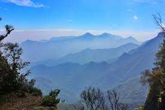

Ooty
Ooty (short for Udhagamandalam) is a resort town in the Western Ghats mountains, in southern India's Tamil Nadu state. Founded as a British Raj summer resort, it retains a working steam railway line. Other reminders of its colonial past include Stone House, a 19th-century residence, and the circa-1829 St. Stephen’s Church. Its 55-acre Government Botanical Garden lies on the slopes of Doddabetta Peak

Kodaikanal
Kodaikanal is a hill town in the southern Indian state of Tamil Nadu. It’s set in an area of granite cliffs, forested valleys, lakes, waterfalls and grassy hills. At 2,000 meters above sea level, the town centers around man-made, star-shaped Kodaikanal Lake, bordered by evergreen forest. Rowing boats can be hired, and hikers and cyclists follow the 5k Lake Road. 